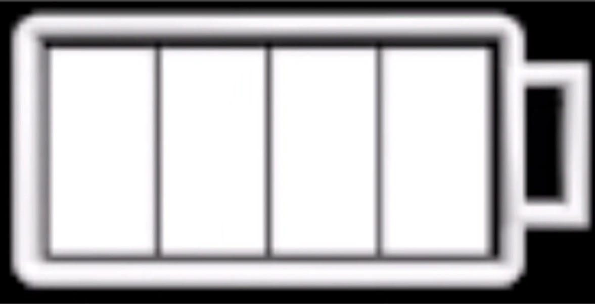
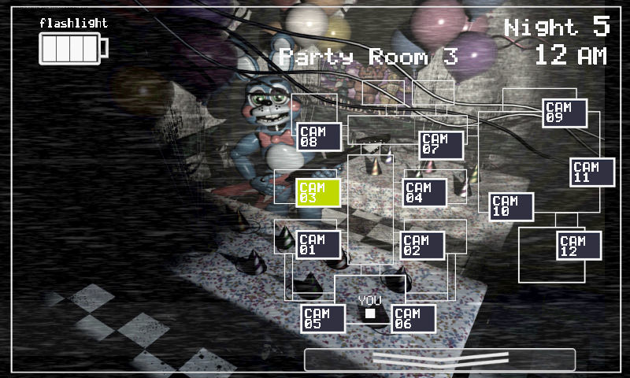
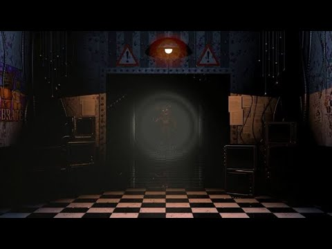
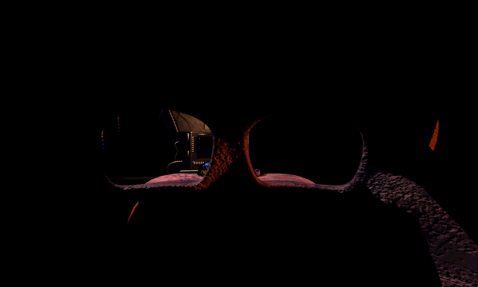
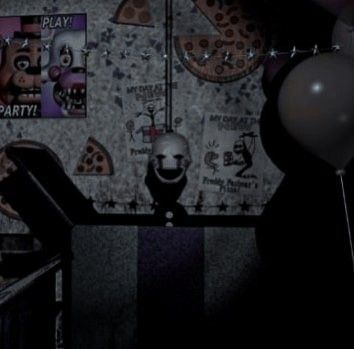

O jogo começa as 12AM e seu objetivo é durar até as 6AM, onde cada hora do jogo dura 70 segundos, totalizando 7 minutos de sobrevivência.
No jogo é um sistema de energia presente, onde é gasta usando luzes, sua lanterna
ou as câmeras
Na imagem a baixo, é um exemplo em game da bateria:

Seu nivel de enegia só atualiza quando cada uma das barras some, ou seja, só mostra quando sua energia estiver em 100%, 75%, 50%, 25% e 0%.
No jogo as câmeras tem a funcionalidade para observar onde os animatronics
estão.
A baixo uma imagem do mapa das câmeras com a câmera da sala de Festas 3
selecionada

No mapa, é totalizado 12 opções para saber onde cada animatronic está.
No jogo, os animatronic podem ver pela frente ou pelos dutos nas laterais, então um jeito de saber onde estão é usando a lanterna.

Na imagem, é possivel ver o corredor com a luz ligada com Withered Foxy parado, e os dois dutos, um na direita e outro na esquerda.
Para a maioria dos animatronics, quando forem atacar, o uso da máscara do Freddy vai te salvar de ser morto, um exemplo da máscara ativa:

Em FNAF 2, existem dois tipos de animatronics, os novos e os velhos, chamados de Withereds.
Toy Freddy

Entra pela frente; use a máscara.
Toy Bonnie

Entra pelo duto direito; use a máscara e espere ele passar pela sua frente
Toy Chica

Entra pelo duto esquerdo; use a máscara
Mangle
Entra pelo duto direito; se ouvir som de estática, coloque a máscara rápido.
Balloon Boy

Entra pelo duto esquerdo; Ele não te mata, mas rouba as pilhas da lanterna, deixando você vulnerável ao Foxy.
Puppet

Se a música parar, você morre. Mantenha a caixa de música sempre com corda
Withered Freddy:

Aparece no corredor e depois no escritório; use a máscara imediatamente.
Withered Bonnie

Aparece direto no escritório; coloque a máscara em milissegundos.
Withered Chica

Aparece direto no escritório; coloque a máscara rápido.
Withered Foxy

Fica no corredor. A máscara não funciona; você deve dar curtas piscadas de lanterna nele.
Golden Freddy

Pode aparecer sentado no escritório ou como uma cabeça gigante no corredor. Use a máscara ou desligue a lanterna rápido.